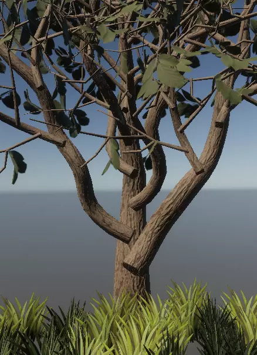
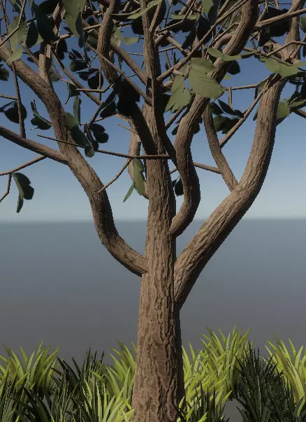
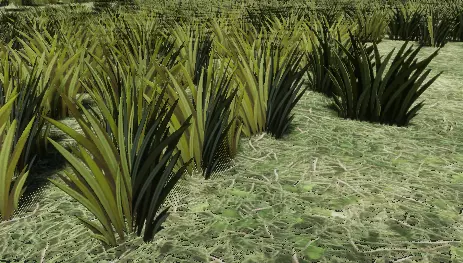
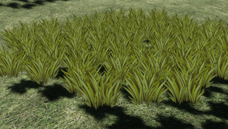
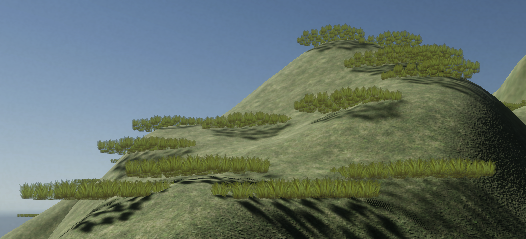
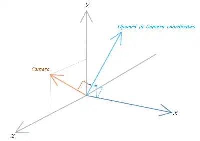
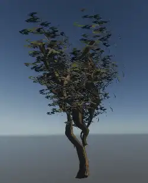
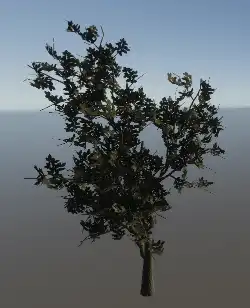

[2021] Capstone - Tech Art Reel - Blogs Go to Nature Scenes Reel
Week1: Project Pitch
My project is a reel of technical arts to show the workflow of how introducing Houdini into indie game projects or game projects by small groups.
Research summary:
- Game artists in China usually have little development background, they feel hard to work on codes or tools required logic-thinking. They prefer tools that what you see is what you get. For example, they usually prefer to read and create map than adjusting parameters.
- For some designers lack of budget to make their games, they will be twice as busy as others.
- The project files need to be well organised.
- The final game graphic should be as good as possible.
Target Audience:
Indie game artists (or artists in small game companies) who have a desire to make video games.
My Goals:
Help artists quickly create realistic nature scenes.
Concepts:
There will be a series of packages made by procedural tools, and then exported into Unity, for each step of game art works.
People who is familiar to those tools can go to the original files and quickly modify them to create a nature scene, or they can stay in Unity and make slightly modification to build a nature scene.
Design Precedents:
- Games such as Assassin's Creed Odyssey, although this is not an indie game, this game was published 3 years ago, we can learn a lot about what could be in a video game, and what's the level of graphics we can achieve too.
- Digital assests in Unity Assets stores, Mountain lake valley environment.
- Tool in Houdini Content Library, a Tree Generator.
References for research:
- GPC (China Audio-video and Digital Publishing Association Game Publishing Working Committee ) , China Game Industry Research Institute, (2020,December 18), China Gaming Industry Report 2020
- Iresearch.cn, (2018), China PC Game Industry Report
Week2: Rock Generator
Design:
-
Basic seed for rock shape
- There will be two ways of basic shape input, custom fbx or obj file imported or platonic solids selected.
- High poly generator
- For parameters to control generated high polygon, there will be two level of them for both beginners and experts.
- Parameters in the Shape group can control the changes of imported basic shape, such as how sharp it is, or how flat it is for the bottom. Besides there are two edge clip groups to change the shape more detailed, but this will be callapsed, thus those beginnes don't have to worry about these.
- Parameters in the Detail group can modify the breakages or noises for the rock's high polygon, which aim to experts.
- For parameters to control generated high polygon, there will be two level of them for both beginners and experts.
- Low poly generator and Renderer
- Lowpoly group to generate low polygon, a slider to control how many polygons will be generated for the final 3d model.
- UV group to generate UVs for the 3d model
- Renderer group was based on the GameDev Simple Baker
- Output Files
- The output node can only support obj files currently.
-
For this part, there will be three groups in the UI:
- - Some tools are refered from Game Development Toolset by Luiz Kruel.
Problems:
- The Auto UV tool: Although the Game development toolset already have good auto UV tool, it still not perfect for my stones, because I hope those UV seems can be hided well. I'm trying to create my own UV tool, but it still have many bugs in this week.
- The Whole Generator in Unity: I'll keep learning about this part.
Week3: Rock Textures Generator
Problems Solved:
- The Auto UV tool: Although I can't design a very polished auto UV tool without any distortion and has very smoothly seems. I designed a toggle for users to select my auto UV tool which can hide the seems but more distortions or the GameDev Auto UV which will have flatter UVs with less distortion.
- The Whole Generator in Unity: The rock generator won't have the Unity tool, because the process of generating high polygons and rendering them must limit the performance in Unity. We can just create 3d models here and export them to Unity.
Rock Texture Generator:
- The Texture Generator was made in Substance Designer, a procedural textures software. It was designed as 2 part, the basic one is a node to create textures, which requires rendered textures, such as Normal map, input and then output textures for Unity.
- Users who are experts of Substance Designer could modify parameters to have many styles of stones. Also there are 3 preset styles of rocks for beginners.
Memo:
- Hope there could be mosses added to rocks, and they could be adjusted from less to more.
Week4: Tree Generator
Goals:
- Multi-layer branches
- Each layer of branches could be adjusted by parameters, I can design a set of branch nodes and reuse them for each layer.
- Reuseable textures for certain styles of trees
- UVs need to be considered during 3d stage, to reuse textures, its models should be super flat and the more like rectangles the better, which means 3d models should separate branches into different columns, so that their UVs could be perfect rectangles.
- Link every random seed together in one slider, so that beginners can modify their trees by simply change it.
How to Realize:
- Create lines for the shape of trunk and branches.
- We can control how much noises added to their points and how smooth they will be.
- "Sweep" or "Extrude" node can generate column basic on lines.
- I use "Extrude" at the beginning, but this node require us to project UV from empty, not convenient enough, and will cause many other issuses.
- "Sweep" node has build-in curves to control the radius of the column. We can control each layer of branches' shape here.
- Select points from upper layer's lines as root points of sub-layer branches.
- Store the radius at certain point's position from upper layer's branch as a variable of each point. Then transfer them to sub-layer branches, so that they will have a basic radius.
- There are loops to roughly create new branch for each point and they are simply interspersed. For the goal of reusing textures, abandon smooth connections between upper-layer and sub-layer branches can create better UVs which can be projected as perfect rectagles with less distortions.
- Reuse these process above for multiple times for each branch layer. Considered about the polygons amount, I designed a trunk and 4 layers of branches.
Week5: Create UV to reuse textures
Create Leaves on branches:
- For each leaf, it will be render in transparent shaders in Unity, so I can just random generate simple grids on branches ,the columns and rows are from 2x2 to 4x4.
- By calculating their point numbers, I can pick the points of leaf veins to bend them to reduce the chance that the grids will disappear when viewed from the side, because they have no thickness.
UV projection and layout:
- To reuse textures, I have to abandon some textures such as Ambient Occlusion Maps, Curvatures or Position maps, each layer of branches only ocupied a rectangle in the layout, and most of them are overlapped together. This will lead to a worse quality of final textures, but it will highly reuse UV maps.
- All of the rectagles of branches are vertical, so that we can make a vertical texture for tree barks.
- The required inputs of the texture generator is just a normal map and a set of textures of the leaf
- Texture Generator of trees has two ways to create textures. A flat and vertical real tree bark texture or changing colors of my texture generator.
- For leaves, I gave up procedural textures, because I can quickly get textures as inputs from the textures.com
Need to do next:
- Renderer required, need to render every layer of branches separately in 3D, because too much pieces of UVs are overlapped, they don't have to render multiple times.
Week6: Shrub Generator
Updates for the Shrub modified from Tree Generator:
- Only 2 layers of branches and a trunk in Shrub Generator,while the Tree Generator has 4 layers.
- New layout of UVs. After removing 2 pieces of sub-branch UVs, I enlarged the UV of the leaf.
- Modified build-in parameters for better shrub's branch shapes.
- Modified Texture Generator for Shrubs.
Render:
- Pick every pieces of branch before the loop started as representatives of each layer of branches.
- Move them and their high polygons far from each other parts, and add output nodes for each of them.
- Create the render sub-network outside the Generator,so that we don't have to load the renderer into Unity.
Week7: Tree and Shrub Generators work in Unity
Tool Updates:
- When first load these digital assets into Unity, it shows empty in Unity.
- The empty tool is due to that the saved digital assets were covered by another one,sometimes there will be multiple definitions for one asset. Clean up the file which may target to the same definition, and reopen Unity will deal with this issue.
- For some reasons, if only show parts of parameters, I rebuilt a sub-network and a totally clean digital asset, and rebuilt parameters then link them again.
- The original leaves are composed by 2 pieces of grids due to the the cull back in currently render. To reduce the polygons, remove one of two grids and terning to double side render.
Terrains:
- I selected the Unity Terrain tool to test the game scene with my generated assets, then I paint trees on terrain, it can support generated tree or shrub models by tools in Unity well. But imported models from houdini are not supported well with Unity tree paint tool. Those models usually have too much children gameobjects, I cleaned up useless information in houdini to better the direct output 3d models.
- I created a set of textures for grasses to test.
Problems found in Testing Terrain
- The materials of trees or any other gameobjects with latest HDRP lit shader are incorrect in transparent order.
- The Terrain in HDRP doesn't support detail shaders, I can't create grasses without huge waste of performance.
- I found 2 different solutions to try:
- a groups of polygons, require polygons faced to different angles, at least 3 faces for each smallest group.
- a single face for each piece of grass but works with Billboard Shader (Polygons with this shader are always facing to the camera.)
Week8: HDRP transparent order Problems
Problems solved:
- Material for trees: require depth write and turn on the Alpha Clipping, or turn on the transparent depth prepass to add a pass with depth write before current pass.
- Before: wrong transparent order
- 
- After: good transparent order
- 
- Material for grasses: while using lit shader, faces without thickness will create shadows with a lot of errors.
- Lit shader
- 
- Unlit shader
- 
Grasses test:
- Groups of polygons
- 3 faces for each group: When place 50000 grasses on a 500x500 sized terrain, only 1.2 Fps
- More than 300 faces for a bigger group: By this way, the total group amount could be reduced. When place them on 500x500 sized terrain, it runs at 51 Fps.
However, as a bigger group, it can't grow along the slopes, and always keep vertical, which causes a lot of errors.

In conclusion:
- The billboard shader with single plane might be better solution.I will test billboard shader next week.
Week9: Grasses Render - Billboard Shader
Updates:
- Billboard shader
- Get the x axis that is perpendicular to both the camera and the upward direction in world coordinates.
- Do the same calculation again to get the upward direction in camera's coordinates. 
- Construct a matrix of camera direction, upward direction in camera's coordinates, and the x axis.
- By multiply with this matrix, gameobjects will rotate to face the camera.
- Wind shader
- Construct a moving gradient noise by tiling and offset the uv.
- Add this noise to x channel (or R channel) of vertex's position in world coordinates.
- To avoid moving the root of grasses, blend the original vertex position to the moving vertex position with an alpha of V value.
- Transform from world coordinates to object coordinates, and multiply it with the outcome of billboard shader's vertex position.
Week10: Grasses Render - Billboard Shader
Updates:
- Wind Shader For Trees
- leaves: I use SmoothStep calculation 2 times to control U and V separately as a mask of leaves to make sure that only leaves will be pushed, but by this way, it's better not to change the tree's UV set. Or at least, let the leaves UV always stay at the top right corner of UV map.
- trunk and branches: Because I reused most uv of branches, my grasses shader will make a lot of errors when pushing the trunk and branches.
I found another way to deal with this, I split the vertex position in object space, and get the X and Z values, value changes on X and Z axis will simulate a pushing force.
- Before: offset based on uv
- 
- After: offset based on vertex position
- 
- When I finish wind shader for grasses, I found the tree leaves need a wind shader too, unless they will look uncompatible.
Leaves and trunk will be pushed by wind both. I separate them to 2 parts in shader:
Week11: Season Changing
Updates:
Create some assets with my generators, and create a new terrain in Unity to test season changing feature.
A template script to show users how to control season changing during runtime.
Problems I met:
- How to achieve the effect of bare trees?
- How to control color changing smoothly?
Solutions:
To achieve the season changing feature by script, the script allows to add materials dynamically, while the script will changing the main color of each shader. I set the main color of all my shaders as "_color".
To show my season changing features for users, I add an input control of the space. Users can hold the space to see how season chaning during runtime.
To control color changine smoothly, I choose the function "Color.Lerp(Color a,Color b,float t)", and set up 4 colors for different season. Such as greenyellow, green, orange, and vermillion.
To achieve the bare trees, I modified my shaders with a new exposed channel (the alpha channel) of main color to control the clip range. For this channel, 1 means no extra clips for leaves, and 0 means clip the whole leaves.

Week12: Lighting Presets
Updates:
Better the terrain textures and put all of them in my final package, I add these textures just for better render outcomes.
I preset 3 sets of lighting envriornments for users, the daytime, the sunset, and the night. To let users can get the same game scene as I rendered, I built prefabs for each lights and volume files, and put every assets needed into the final package.
Make records of each stage when using tools for users as a reference.